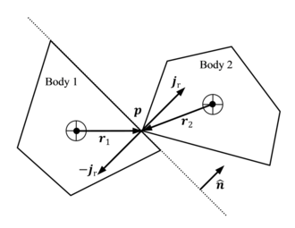

Focus Question:
How do computer simulations simulate the motion and interaction of rigid bodies in two dimensions?
How do forces, kinematics, energy, and momentum influence the behavior of these bodies?
Physics Simulations
In today’s world, we are surrounded by computers and technology. These computers can perform a multitude
of different tasks, some of which include connecting people across the world, displaying movies, managing
financial transactions, and even controlling complex machinery. One of the common applications of the
modern computer is its ability to simulate the real world; whether it's sending a rocket to the moon or
playing a first-person shooter video game, physics simulations play a crucial role. Physics simulations
allow us to predict real-world events, saving money and resources that would otherwise be necessary. In
my self-directed study, I plan to explore a specific area of computer-simulated physics: rigid body dynamics.
Rigid body dynamics is, by definition, the behavior of bodies as they move and interact with each other
and their environment.
What is a rigid body?
A rigid body is an idealized physical object that does not deform under external forces, maintaining its
shape, size, and internal structure. While no real-world object is perfectly rigid, simulating a rigid body
requires much less computation power and simplifies the complexity of a true-to-world simulation. In the
simulations I will be observing and creating, I will assume that every physical object is a rigid body.
How might you create a simulation using a computer?
A computer takes an input, and using the given instructions, it returns an output. Unfortunately, computers
cannot understand human languages such as English or French. Instructions given to computers must be in binary.
Binary is a system of information encoding using bits; each bit represents a state, either 1 (on) or 0 (off).
Over the years, engineers have been able to improve the process of writing computer code. Instead of having to
manually write 0s and 1s, we can now write code in more human-like languages. The code is then translated or
compiled into machine code (binary). There are hundreds of coding languages one can choose from, I will be
using a mix of javascript and sudo-code (a mix of English and code).
Euler Integration
The most popular method for integrating force into the other equations for motion is the Implicit Euler Method.
This method uses numerical integration to find the solution for the next step in time. As opposed to using an
analytical approach, a numerical approach saves computation time but comes with inherent error. The Implicit
Euler Method is more accurate than the Explicit Euler Method, which is why most commercial applications of
physics simulations use the Implicit Method, such as Unity (a popular game development engine). The first step
in the Implicit Euler method is to take the current velocity and add to it the acceleration multiplied by the
delta time. \( \vec{v}_{n+1} = \vec{v}_n + \vec{a} \cdot \Delta t \) To find the new position we take the new
velocity, multiply by the delta time, and add it to the current position. \( \vec{d}_{n+1} = \vec{d}_n + \vec{v}_{n+1} \cdot \Delta t \) The method becomes more accurate as \( \Delta t \) approaches 0. In an ideal world, we could
simulate thousands of times every second to receive the most accurate results possible, unfortunately, this is
not possible in real life and we will have to settle with 60 simulation steps per second.
Comparing the kinematic equations to the Semi-Implicit Euler Method
As I mentioned before in the section on Euler Integration there will be errors when using any of the various numerical integration techniques (some more than others).
Using the kinematic equations and comparing the results to the Semi-Implicit Euler method,
we find that when simulating at low delta times we end up with very impressive results.
Adding in forces
When using numerical integration to solve for the motion of a rigid body the only parameters that we care about are the forces acting on our object and the mass of the object.
Using both the mass and the force we can solve for the acceleration and then use the aforementioned methods to solve for the other properties of motion.
$$\vec{F} = m \vec{a} \quad \quad \vec{a} = \frac{\vec{F}}{m}$$ Knowing this, we now have everything needed to work out what will happen at every step of our simulation.
$$\vec{F} = \vec{F_g} + \vec{F_a} + \vec{F_N} + \vec{F_f}$$
$$\vec{a} = \frac{\vec{F}}{m}$$
$$\vec{v}_{n+1} = \vec{v}_n + \vec{a} \cdot \Delta t$$
$$\vec{d}_{n+1} = \vec{d}_n + \vec{v}_{n+1} \cdot \Delta t$$
Impulses and Collisions
Up to this point, we have some code that allows us to create a rigid body, and using the Implicit Euler Method we can move it around and apply gravity.
// I'm using a js library for the vectors, called p5js
class Simulation{
constructor(gravityStrength = 9.8) {
// This array contains all the rigidbodies in the simulation
this.rigidbodies = [];
// This is the strength of the gravity in the simulation
this.gravityStrength = gravityStrength;
}
addRigidbody(rigidbody) {
// This function adds a rigidbody "object" to the simulation
this.rigidbodies.push(rigidbody);
}
stepSimulation(dt) {
// This function steps the simulation forward by dt seconds
// It applies gravity to all the rigidbodies and then steps them forward in time
for(let i = 0; i < this.rigidbodies.length; i++) {
let rb = this.rigidbodies[i];
rb.applyForce(this.p.createVector(0, this.gravityStrength * rb.mass));
rb.stepSimulation(dt);
}
}
}
class Rigidbody {
constructor(mass, position, velocity, radius) {
this.mass = mass;
this.position = position;
this.velocity = velocity;
this.acceleration = 0;
this.radius = radius;
}
stepSimulation(dt) {
// This function steps the rigidbody forward by dt seconds
this.velocity.add(p5.Vector.mult(this.acceleration, dt)); // Implicit Euler Method
this.position.add(p5.Vector.mult(this.velocity, dt)); // Implicit Euler Method
this.acceleration.mult(0); // Reset the acceleration every step
}
applyForce(force) {
// This function applies a force to the rigidbody in Newtons
this.acceleration.add(p5.Vector.div(force, this.mass));
}
}
As of now, the rigid bodies are isolated from their environment. This means they cannot interact with other rigid bodies or any external forces or constraints.
To create a more realistic simulation, it's necessary to allow interactions between rigid bodies and their environment. This leads us to our next step for the simulation, collisions.
To create a collision in a physics simulation you need to know if two rigid bodies are colliding, each rigid body’s momentum, and the normal vector between the two during the collision.

For simplicity let’s use circles for the rigid bodies, as they are by far the most simple to use when it comes to collision detection and resolution.
The algorithm for detecting a collision is fairly simple. You loop through each pair of rigid bodies in the simulation and check if the distance between them is less than the sum of their radii.
If that is the case then the rigid bodies are overlapping.
$$ \sqrt{(b_{1x} + b_{2x})^2 + (b_{1y} + b_{2y})^2} \leq (r_1 + r_2) $$
Once we determine that two bodies are colliding we can resolve that collision. To resolve the collision, we need to use our knowledge of the classical laws for momentum.
$$ \vec{P}_{tot} = \vec{P}'_{tot}, \quad n = \text{number of bodies} \rightarrow \vec{P}_{tot} = \sum_{i=1}^{n} \vec{P}_i \text{ and } \vec{P} = m \vec{v} $$
These laws are the foundation for a popular collision resolution method called the Impulse Method.
This method involves directly modifying the velocities of objects using an impulse along the collision normal.
The Impulse Method uses the coefficient of restitution (e) to determine the overall momentum conservation of the system, with 1 being no momentum lost and 0 being no momentum conserved.
The derivation for this equation is complicated and beyond the scope of this SDS, however here is the equation taken from this research paper (ignoring the angular components):
$$ \vec{v}_r = (\vec{v}_1 - \vec{v}_2) \rightarrow J = \frac{-(1 + e) \vec{v}_r \cdot \hat{n}}{\frac{1}{m_1} + \frac{1}{m_2}} $$
Collision Resolution Code
class CollisionSolver{
constructor(simulation) {
this.simulation = simulation;
}
resolveCollisions() {
// Resolve all collisions (circle to circle)
for (let i = 0; i < this.simulation.rigidbodies.length; i++) {
for (let j = i + 1; j < this.simulation.rigidbodies.length; j++) {
let rb1 = this.simulation.rigidbodies[i];
let rb2 = this.simulation.rigidbodies[j];
let distance = p5.Vector.sub(rb1.position, rb2.position).mag();
if (distance < rb1.radius + rb2.radius) {
// They are colliding
let normal = p5.Vector.sub(rb1.position, rb2.position).normalize(); // Normal vector pointing from rb2 to rb1
let relativeVelocity = p5.Vector.sub(rb1.velocity, rb2.velocity); // Relative velocity of rb1 to rb2
const collisionOfRestitution = 1; // Perfectly elastic collision
let impulse = p5.Vector.mult(normal, p5.Vector.dot(normal, relativeVelocity) * (1 + collisionOfRestitution) / (1 / rb1.mass + 1 / rb2.mass));
rb1.velocity.sub(p5.Vector.div(impulse, rb1.mass)); // Subtract impulse from velocity of the first object
rb2.velocity.add(p5.Vector.div(impulse, rb2.mass)); // Add impulse to velocity of the second object
// Move the objects out of each other
let overlap = (rb1.radius + rb2.radius) - distance;
let correction = p5.Vector.mult(normal, overlap / (1 / rb1.mass + 1 / rb2.mass));
rb1.position.add(p5.Vector.div(correction, rb1.mass));
rb2.position.sub(p5.Vector.div(correction, rb2.mass));
}
}
}
}
}
Energy Calculation Code
// Calculate the total energy and momentum of the simulation
// Run in the stepSimulation() function in the Simulation class
let totalSimulationEnergy = 0;
let totalSimulationMomentum = 0;
for(let i = 0; i < this.rigidbodies.length; i++) {
let rb = this.rigidbodies[i];
totalSimulationEnergy += (0.5 * rb.mass * rb.velocity.magSq()) + (this.gravityStrength * rb.mass * -(rb.position.y - this.p.height));
totalSimulationMomentum += rb.velocity.mag() * rb.mass;
}
Full Physics Engine
Using the above principles as well as some new algorithms, I have created a 2D physics engine that works with circles and any convex polygon.
The physics engine also incorporates the angular component of the rigid bodies, allowing for rotation and a more accurate simulation.
The engine also supports compound bodies linked with custom offsets from the center of mass.
Some notable algorithms and formulae I used include the point segment distance formula, the separating axis theorem,
the axis-aligned bounding box (AABB) collision detection algorithm, the line-to-line intersection formula,
and the point-polygon intersection algorithm. The full engine code and its documentation are available on my GitHub
Pool Using The Complete Engine
Use the Spacebar to shoot the cue ball toward the mouse pointer. The cue ball will collide with the other balls and the walls of the pool table.
Conclusion
The study of rigid body dynamics is a very interesting field of physics. The principles of kinematics, forces, energy, and momentum are crucial to understanding the behavior and the accurate prediction of rigid bodies in a computer simulation.
The Implicit Euler Method is a great mix of performance and accuracy, allowing for quite accurate predictions of motion.
The creation of a physics engine is no easy task, requiring a well-versed understanding of both physics and mathematics.
The engine I have created is capable of simulating the motion and interaction of rigid bodies in two dimensions, providing a realistic representation of a physical system (In 2D).
I have learned a great deal about physics simulations and computer programming through this self-directed study, and, in the future, I look forward to exploring more advanced topics such as 3D simulations.
Sources
Baraff, D. (n.d.). Physics: Collision response. Newcastle University. https://research.ncl.ac.uk/game/mastersdegree/gametechnologies/physicstutorials/5collisionresponse/Physics%20-%20Collision%20Response.pdf
Bittle, W. (2010, January 1). SAT (Separating Axis Theorem). dyn4j. https://dyn4j.org/2010/01/sat
Edgar Programmator. (2023, August 31). Find the intersection of two line segments in 2D (Easy Method) [Video]. YouTube. https://www.youtube.com/watch?v=bvlIYX9cgls
Engineering Made Easy. (2019, February 9). Numerical Analysis - Backward Euler Method [Video]. YouTube. https://www.youtube.com/watch?v=cdUpAuGTIfE
Integration Basics | Gaffer on Games. (2004, June 1). Gaffer on Games. https://gafferongames.com/post/integration_basics/
Souto, N. (2015, January 22). Video Game Physics Tutorial - Part I: An Introduction to Rigid Body Dynamics. Toptal Engineering Blog. https://www.toptal.com/game/video-game-physics-part-i-an-introduction-to-rigid-body-dynamics
Two-Bit Coding. (2022, August 6). Contact points (Polygon/Polygon)- Let’s make a physics engine [20] [Video]. YouTube. https://www.youtube.com/watch?v=5gDC1GU3Ivg